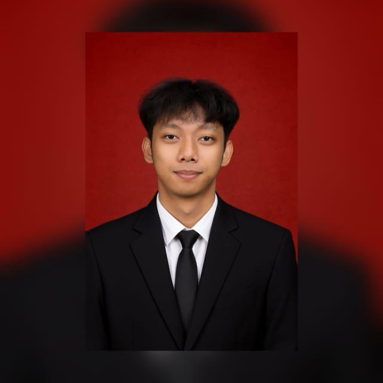

IT Operations Staff · Technical Support & Infrastructure
Berpengalaman lebih dari 7 tahun di bidang operasional dan teknis, dengan fokus pada infrastruktur IT, instalasi perangkat, troubleshooting user, dan monitoring jaringan.
Lihat CV lengkap dengan pengalaman kerja, pendidikan, dan keahlian.
Kumpulan project, kontribusi teknis, dan perjalanan karier.